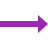

Conhecimentos de HTML
ÍNDICE
Não são as tecnologias que mudam o mundo, mas sim, seus criadores - David Ribeiro Guilherme
História dos computadores
Voltar
Os primeiros computadores eram enormes e lentos, usados principalmente por governos e militares.
Com o tempo, ficaram menores, mais rápidos e acessíveis. Hoje, usamos computadores até no bolso, como nos celulares.
- ENIAC(1945) – Primeiro computador eletrônico de uso geral.
- UNIVAC I(1951) – Primeiro computador comercial nos EUA.
- Z3 (1941) – Primeiro computador programável, criado na Alemanha.
- Colossus(1943) – Usado na Segunda Guerra para decifrar códigos.
Clients são os dispositivos ou programas que fazem pedidos, como seu navegador acessando um site. Eles pedem informações a um server. Basicamente, são os "usuários" da internet.
Client-side (roda no navegador do usuário):
- HTML– Estrutura da página.
- CSS– Aparência e estilo da página.
- JavaScript– Comportamento e interações na página.
Servers são computadores que ficam esperando por pedidos dos clients. Eles guardam dados e enviam as respostas, como páginas de sites.
 Server-side (roda no servidor):
Server-side (roda no servidor):
- PHP– Muito usado em sites e sistemas web.
- Python– Popular com frameworks como Django e Flask.
- Node.js– Permite usar JavaScript também no servidor.
- Ruby– Usado com o framework Ruby on Rails.
- Java– Muito usado em sistemas corporativos.
- C#– Comum em aplicações web com ASP.NET.
Listas ordenadas e não ordenadas
Voltar
Listas ordenadas têm números ou letras (1, 2, 3...), mostrando uma sequência. As não ordenadas usam bolinhas ou símbolos, sem ordem específica.
Lista ordenada:
É uma lista com ordem definida, geralmente numerada.
- Acordar cedo
- Escovar os dentes
- Tomar café
- Ir ao trabalho
Lista não ordenada:
É uma lista sem ordem específica, com marcadores como bolinhas.
- Html
- CSS
- JS
Introdução ao HTML
Voltar
HTML é a linguagem padrão usada para criar páginas da web.
Ele define a estrutura básica do conteúdo que aparece em um navegador, como textos, imagens, links, botões e formulários.
Conceitos básicos
- HTML é uma linguagem de marcação, não de programação.
- Usa tags (etiquetas) para indicar o que cada parte do conteúdo representa.
- É interpretado pelos navegadores como o Chrome, Firefox, Safari e entre outros.
Por que a estruturação é importante?
- Facilita o entendimento do conteúdo por navegadores, usuários e motores de busca (como o Google).
- Melhora a acessibilidade
- Ajuda no posicionamento(otimização para buscadores).
- Permite aplicar estilos com CSS e funcionalidades com JavaScript de forma organizada.
As tags são comandos usados para marcar e organizar o conteúdo em uma página web. Cada tag indica o tipo de elemento (como texto, imagem ou link) e sua função.
Tags são fundamentais para:
- Exibir conteúdo corretamente nos navegadores.
- Organizar o código de forma semântica.
- Otimizar a página para buscadores.
Assista o vídeo

Aprenda HTML e Construa sua Carreira como Desenvolvedor Web!